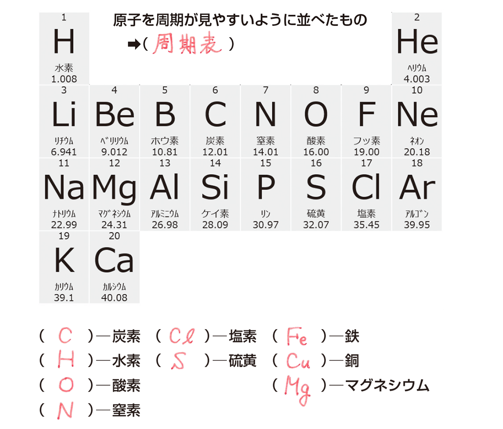

【原子と分子】
原子とは
H, O, C など、これ以上分けられない最小の粒
※つまり"原子は一番小さい"！！
(原子同士が繋がると次に出る分子となる)
分子とは
H₂O(水) や CO₂(二酸化炭素)などのような
原子(H,O,Cの一つ一つ)が結びついてできた粒！
覚えるべき元素記号
元素記号は、"原子"の種類を表す記号！

このように元素記号の種類はたくさんある
次の単元"化学変化式"のために
覚えるべき元素記号をピックアップ！
.png "周期表")
| 物質の名前 |
元素記号 |
| 炭素 |
C |
| 水素 |
H |
酸素
O
| 窒素(ちっそ) |
N
塩素(危険な酸性物質)
Cl
硫黄(温泉に多い)
S
鉄
Fe
銅
Cu
マグネシウム
Mg
ナトリウム
Na
アルミニウム
Al